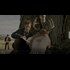

<!DOCTYPE html>
<html lang="en">
 <head>
  <meta charset="utf-8"/>
  <title>
   Pedo symbol was documented in the first episode of true detective, painted on a dead victim.
  </title>
  <meta content="Post on /v/Pizzagate archived on 2016-12-02 by TheExedous." name="description"/>
  <meta content="Pedo symbol was documented in the first episode of true detective, painted on a dead victim." property="og:title"/>
  <meta content="Post on /v/Pizzagate archived on 2016-12-02 by TheExedous." property="og:description"/>
  <link href="../../page.css" rel="stylesheet"/>
  <meta content="https://voat.pizzagate.hackliberty.org/thumbnails/32/d9/32d9a136-622b-4104-ac15-c8c53bfc2c33.jpg" property="og:image"/>
  <meta content="https://voat.pizzagate.hackliberty.org/v/pizzagate/1455229.html" property="og:url"/>
  <meta content="width=device-width, initial-scale=1" name="viewport"/>
  <link href="https://voat.pizzagate.hackliberty.org/1455229.html" rel="canonical"/>
  <meta content="article" property="og:type"/>
  <meta content="Voat /v/Pizzagate Archive" property="og:site_name"/>
  <meta content="en_US" property="og:locale"/>
  <meta content="summary_large_image" name="twitter:card"/>
  <meta content="Pedo symbol was documented in the first episode of true detective, painted on a dead victim." name="twitter:title"/>
  <meta content="Post on /v/Pizzagate archived on 2016-12-02 by TheExedous." name="twitter:description"/>
  <meta content="https://voat.pizzagate.hackliberty.org/thumbnails/32/d9/32d9a136-622b-4104-ac15-c8c53bfc2c33.jpg" name="twitter:image"/>
 </head>
</html>
<body class="dark">
 <div id="container">
  <!-- array (
  'submissionid' => 1455229,
  'creationDate' => '2016-12-02 14:07:31',
  'domain' => 'sli.mg',
  'formattedContent' => NULL,
  'isAdult' => 0,
  'isAnonymized' => 0,
  'subverse' => 'pizzagate',
  'thumbnail' => '32d9a136-622b-4104-ac15-c8c53bfc2c33.jpg',
  'title' => 'Pedo symbol was documented in the first episode of true detective, painted on a dead victim.',
  'url' => 'https://sli.mg/bx5XMC',
  'userName' => 'TheExedous',
  'archivedLink' => NULL,
  'archivedDomain' => NULL,
  'isDeleted' => 0,
) -->
  <div style="text-align:center; font-size:24px; font-weight:bold;">
   <a href="../../index.html" style="text-decoration: none; color: inherit;">
    Voat /v/Pizzagate Archive
   </a>
  </div>
  <div class="content" role="main">
   <div class="sitetable linklisting" id="siteTable">
    <div class="submission id-1455229 link type-text" id="submission-1455229">
     <a name="submissionTop">
     </a>
     <p class="parent">
     </p>
     <a class="thumbnail may-blank" href="https://sli.mg/bx5XMC" target="_self">
      
     </a>
     <div class="entry unvoted">
      <p class="title">
       <a class="title may-blank" href="https://sli.mg/bx5XMC" tabindex="1" target="_self" title="Pedo symbol was documented in the first episode of true detective, painted on a dead victim.">
        Pedo symbol was documented in the first episode of true detective, painted on a dead victim.
       </a>
       <span class="domain">
        (
        <a href="https://archive.searchvoat.co/search.php?d=sli.mg">
         sli.mg
        </a>
        )
       </span>
      </p>
      <p class="tagline">
       submitted
       <time datetime="2016-12-02T14:07:31+00:00" title="12/02/2016 2:07:31 PM">
        2016-12-02T14:07:31
       </time>
       by
       <span class="userattrs">
        <a class="author may-blank" href="https://archive.searchvoat.co/search.php?u=TheExedous">
         TheExedous
        </a>
       </span>
      </p>
      <ul class="flat-list buttons">
       <li class="first">
        <a class="comments may-blank" href="https://archive.searchvoat.co/v/pizzagate/1455229" rel="nofollow">
         2 comments
        </a>
       </li>
      </ul>
     </div>
     <div class="child">
     </div>
     <div class="clearleft">
     </div>
    </div>
    <div class="clearleft">
    </div>
   </div>
   <div class="horizontal-line">
   </div>
   <div class="commentarea">
    <div class="sitetable nestedlisting" id="siteTable">
     <div class="child id-7030778 comment even" style="">
      <div class="entry unvoted">
       <div class="noncollapsed" id="7030778" style=";">
        <p class="tagline">
         <a class="author may-blank" href="https://archive.searchvoat.co/search.php?u=ScottKnight">
          ScottKnight
         </a>
         <span class="userattrs">
         </span>
         <time datetime="2016-12-02T14:35:09+00:00" title="12/2/2016 2:35:09 PM">
          2016-12-02T14:35:09
         </time>
        </p>
        <div class="usertext-body may-blank-within" id="commentContent-7030778">
         <div class="md">
          <p>
           <p>
            That's cool, I misread your wording and checked the date of the episode since I read it as it was released on True Detective first.
           </p>
           <p>
            Did the episode include rape or child abuse?
           </p>
          </p>
         </div>
        </div>
        <ul class="flat-list buttons">
         <li class="first">
          <a class="bylink" href="https://archive.searchvoat.co/v/pizzagate/1455229/7030778" rel="nofollow">
           link
          </a>
         </li>
        </ul>
       </div>
      </div>
      <div class="child id-7030815 comment odd" style="">
       <div class="entry unvoted">
        <div class="noncollapsed" id="7030815" style=";">
         <p class="tagline">
          <a class="author may-blank" href="https://archive.searchvoat.co/search.php?u=TheExedous">
           TheExedous
          </a>
          <span class="userattrs">
          </span>
          <time datetime="2016-12-02T14:38:48+00:00" title="12/2/2016 2:38:48 PM">
           2016-12-02T14:38:48
          </time>
         </p>
         <div class="usertext-body may-blank-within" id="commentContent-7030815">
          <div class="md">
           <p>
            <p>
             Yes the whole first season was loosely based on a child pedo ring / satanism true story. Look up The Real True Detective, vice did a mini documentary on it on YouTube
            </p>
           </p>
          </div>
         </div>
         <ul class="flat-list buttons">
          <li class="first">
           <a class="bylink" href="https://archive.searchvoat.co/v/pizzagate/1455229/7030815" rel="nofollow">
            link
           </a>
          </li>
         </ul>
        </div>
       </div>
      </div>
     </div>
    </div>
   </div>
  </div>
 </div>
 <div class="footer-container">
 </div>
</body>
